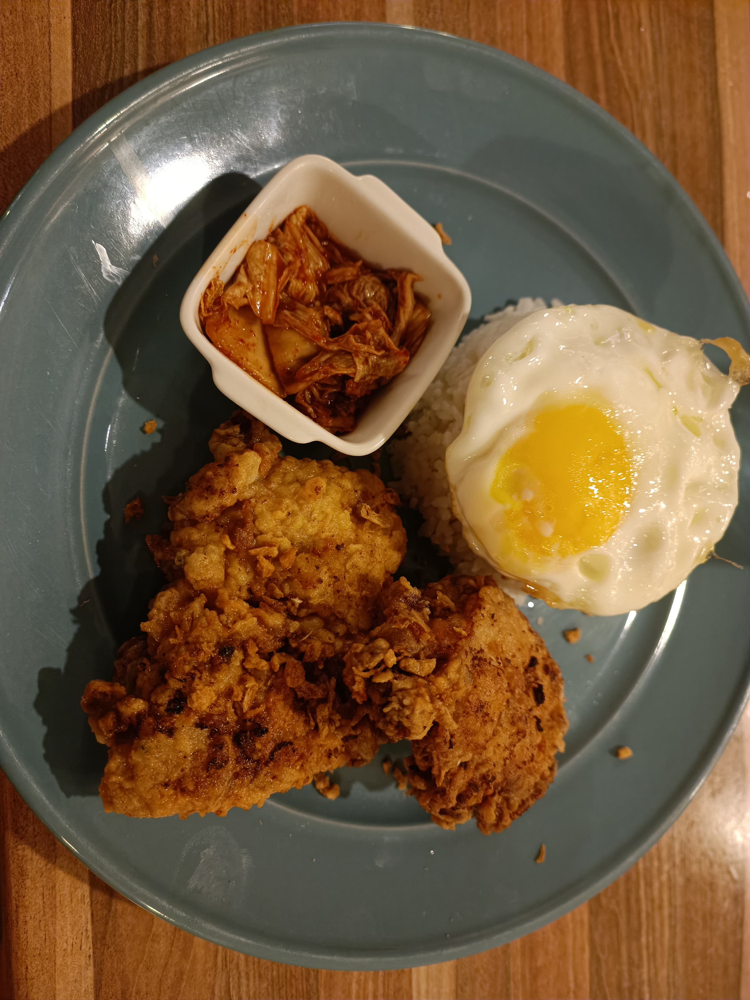

Home
The Best Air-Fried Buttermilk Chicken (On Everything)

Crispy fried chicken mate you'll love it. You don't have to use breadcrumbs even come on man.
Here are the ingredients you need
- 3 Chicken Thigh Cuts
- 100ml of your choice of Buttermilk (or laban)
- Turmeric Powder
- Your choice of hot sauces, but primarily sriracha and buffalo sauce
- Paprika, Cayenne, Garlic Powder, Cumin, Onion Powder, Cajun, Hot chilli powder
- Vinegar
- Breadcrumbs / Panko
Steps
- Clean and rinse your chicken with some turmeric and rinse. Let it dry for like 15 minutes.
- Get a container and drop allat buttermilk in. Throw in a generous amount of seasoning, hot sauces and a tasteful amount of vinegar.
- Mix well until it becomes a nice shade of orange.
- Thro yo chicken in that buttermilk and throw it in the fridge for at leaast 8 hours.
- Once marinaded, take yo chicken and you can do one of two things:
Oil-Fried Chicken
- Pour some bread crumbs and spices in a bowl and mix well.
- Place chicken into breadcrumbs and cover well.
- Heat up a deep pan with some cooking oil and thro yo chicken in for 5 minutes. Flip and cook for another 5 minutes.
- Remove chicken and place on a drying rack for another 5 minutes.
- Plate that shi and you got yourself some damn good fried chicken.
Air-Fried Chicken
- Place your chicken in an air fryer (double foil the bottom). Get a tiny cup kinda thing and fill it with some water, enough to steam the chicken when it starts boiling.
- Turn on the air fryer and flip when it recommends you to.
- After its done cooking, plate that shi and you got yourself some damn good baked chicken.